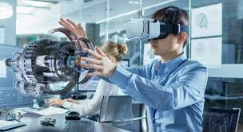
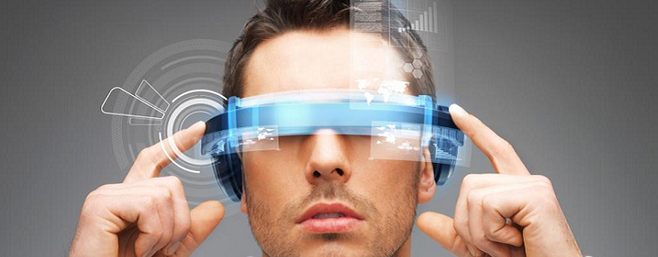
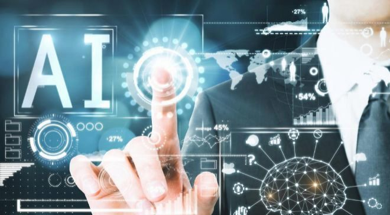
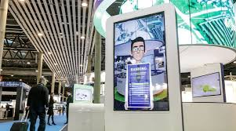
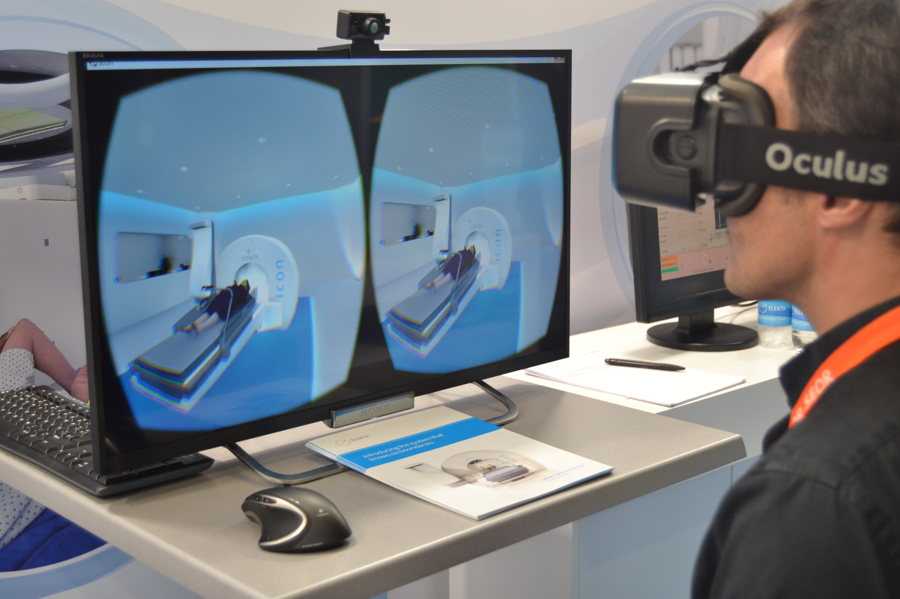
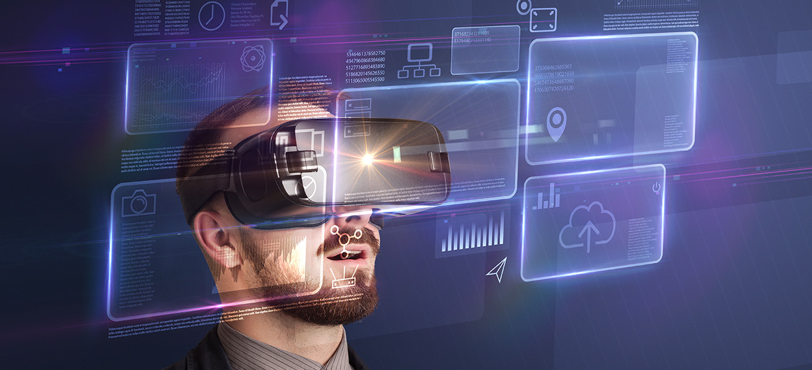

La IA: En la realidad virtual
¿Que es la Realidad virtual y la Realidad aumentada?
La realidad aumentada muestra un lugar real y proyecta en él ciertos elementos virtuales. Suele usar GPS y la cámara de los dispositivos, no necesita accesorios adicionales. Pokémon Go fue una de las aplicaciones que tuvo más éxito con esta tecnología.
La realidad virtual, como ya mencionamos, es inmersiva, brinda la experiencia completa y parece que “te transporta” totalmente a otros lugares. Para lograrlo necesitas cascos o lentes especiales.
Por su parte, la realidad mixta junta las dos anteriores. Permite ver el mundo real con elementos virtuales, pero suma los lentes para poder explorar, movernos y ver dichos elementos desde cualquier ángulo, sin necesidad de un teléfono móvil.
¿Para que sirve?
Muchos videojuegos ya cuentan con esta tecnología que permite mejorar los gráficos en 3D, sumergir al usuario en la historia y, sobre todo, facilitar su uso con accesorios cada vez menos intrusivos y simples.
Este es uno de los campos de uso más extensos en los que se puede aplicar la tecnología, ya sea para el colegio o la universidad. La realidad virtual permite desde visitar museos a distancia como lo hizo Google con la exhibición sobre Frida Kahlo; hasta diseñar edificios o aprender sobre las constelaciones y planetas.
También se emplea en el campo de la salud, por ejemplo, en casos de cirugía específica para virtualizar y simular partes del cuerpo antes de una operación. Asimismo, para terapias que ayudan a tratar fobias o traumas.
Desarrollo de la IA: En la realidad virtual
 Hoy en día, los medios de comunicación nos muestran algunas de las grandes ventajas que nos ofrece el trabajar con las conocidas como tecnologías exponenciales, tales como: Inteligencia Artificial, Realidad Virtual, Internet de las cosas, computación cuántica, etc. Estas tecnologías representan un gran cambio no solamente en cómo percibimos los procesos de negocio, sino también en nuestra vida cotidiana. De esas tecnologías veremos especialmente cómo la Inteligencia Artificial y la Realidad Aumentada pueden combinarse a la hora de crear nuevas aplicaciones que impacten positivamente en la sociedad.
Hay una pregunta que queda en el aire, y es cómo estas dos tecnologías son capaces de trabajar conjuntamente. Es un hecho que la Realidad Aumentada está íntimamente vinculada con la Inteligencia Artificial. Esto se debe a uno de los campos de especialización dentro de la Inteligencia Artificial conocido como Deep Learning. Los avances en este, haciendo el uso de redes convolucionales o redes con memoria, son cruciales a la hora de poder reconocer objetos en imágenes y hacer un seguimiento de estos dentro de entornos bidimensionales o tridimensionales.
Asi mismo, también se pueden utilizar las técnicas descritas previamente para los sistemas de seguimiento de manos y ojos. Todo ello puede ser utilizado como medio de interacción con este entorno adicional que enriquece y aumenta la realidad. Además, habría que añadir que la Inteligencia Artificial mejora las capacidades de la Realidad Aumentada, aprendiendo del desempeño en estos entornos, haciéndolos mucho más inmersivos e intuitivos para los usuarios finales.
Otro de los aspectos donde se relacionan estas tecnologías, es en el hecho de que la Inteligencia Artificial funciona como acelerador para la creación de contenido de Realidad Aumentada. Gran parte de los datos extraídos de las interacciones con el entorno, pueden ser usadas para realizar estimaciones valiosas para el usuario, como por ejemplo, la medición de distancias entre puntos, predicciones de fallos de una instalación o administración de tareas a realizar, usándose todas ellas como medio para mejorar la experiencia de usuario. Esto también proporciona una serie de herramientas muy valiosas para los desarrolladores, al obtener feedback respecto a la preferencia de los usuarios ante las interacciones con el entorno de Realidad Aumentada.
Estamos inmersos en la cuarta revolución industrial, donde la robotización y la automatización de procesos masiva son fenómenos que pueden preocupar a una amplitud de sectores de la población, debido a la posible eliminación de puestos de trabajo que podrían conllevar el uso de dichas tecnologías. Sin embargo, estos habilitadores resultan de gran utilidad para facilitar, enriquecer y potenciar el desempeño de los empleados, pudiendo desempeñar sus tareas de manera más segura, eficiente y controlada, y de esta manera dedicar su tiempo e intelecto a actividades de mayor valor añadido.
Una serie de estudios recientes llevaron a cabo una comparativa de rendimiento en operarios de instalaciones de turbinas de gas para la generación de energía eléctrica. Los resultados fueron significantemente sorprendentes, dado que, para el ensamblaje de la primera turbina sin uso de los asistentes de realidad aumentada, emplearon una media de entre 7 y 8 horas. Sin embargo, quienes utilizaron dichos dispositivos, necesitaron poco menos de una hora. Esta diferencia tan notoria es debida a que, en el primero de los casos, es necesaria una formación y un estudio previos para poder iniciar los ensamblajes. En cambio, con los asistentes de Realidad Aumentada, se dispone de una vía directa para el ensamblaje, siguiendo una guía paso a paso en tiempo real. Añadido a esa mejora en la eficiencia en la realización de trabajo determinado, también se pudo observar una clara diferencia en cuanto a los errores cometidos por el operario, siendo significativamente inferiores en el segundo caso.
Por lo tanto, esta tecnología es capaz de abrirnos un nuevo medio para difundir el conocimiento y hacer un uso práctico del mismo, siendo altamente intuitivo y contando con una curva de aprendizaje muy pequeña, ya que consiste en interactuar en entornos reales, seguros y guiados. Es evidente que esto puede ser aplicado directamente en el campo de la educación, no solo en entornos escolares para facilitar la docencia, aprendizaje en talleres de arte, tecnología, química o física con entornos interactivos, sino también en el ámbito profesional antes mencionado.
El uso de asistentes de Realidad virtual aumentada
El uso de asistentes de Realidad Aumentada está demostrando tener un sinfín de aplicaciones en entornos industriales y en diferentes sectores tales como retail, educación, ocio, cultura, etc. Los campos descritos anteriormente nos muestran la increíble versatilidad de esta tecnología, que poco a poco irá formando parte de nuestra vida cotidiana tanto personal como profesional.
Un caso particular que cabe mencionar, es su uso en el mundo de la automoción. Actualmente se están produciendo grandes avances en los sistemas de conducción autónoma y se está demostrando como la sensorización en los coches nos ayuda a desarrollar una simbiosis con el coche altamente beneficiosa en materia de seguridad, eficiencia y sostenibilidad. Los asistentes de Realidad Aumentada utilizando Inteligencia Artificial, pueden mejorar las experiencias de conducción en aspectos tan diversos como la ocupación de los puntos ciegos, avisos para el control de colisiones, integración visual de navegadores en la luna principal del coche, etc.
Es evidente que este tipo de aplicaciones son capaces de extender nuestro mundo y pueden generar una experiencia de usuario mucho más rica e inmersiva. Más aún, teniendo en cuenta que nuestros dispositivos móviles son una extensión de nosotros mismos. Esto es debido al tiempo progresivamente incremental que la población hace uso de ellos y de la dependencia que están generando.
Enfoque ludico
Éste es quizá el tipo de proyecto más conocido en cuanto a desarrollo de realidad virtual: una experiencia que busca entretener o maravillar al usuario. Estos desarrollos están enfocados a productos de entretenimiento o productos de consumo. Por ejemplo, se ha vuelto una tendencia el uso de video 360 para la promoción de películas nuevas.
En nuestro artículo “Terror y realidad virtual: marketing escalofriante”, vimos cómo Warner Brothers aprovechó el video 360 y la plataforma Google Cardboard para promocionar la secuela de su exitosa película de terror “La Maldición”. Y, en este caso, es muy acertado el uso de la plataforma de Google Cardboard: es de fácil entrada (costos muy bajos y sin la necesidad de teléfonos de gama alta), lo que permite que su alcance sea mucho mayor que con otras plataformas. Este video incluso puede verse en tu móvil o PC sin ningún tipo de visor de realidad virtual. Simplemente puedes mover el teléfono o el cursor para fijar la cámara en el ángulo que desees.
Este enfoque crea un vínculo emocional con tu marca al proveer una experiencia única e inmersiva. Lo más importante de este tipo de proyectos es que la experiencia sea única, original y divertida.
Enfoque Simulacion
No todo tiene que ser juegos y risas. La realidad virtual es una poderosa herramienta que puede transportar a tus clientes justo a la situación y momento de uso de tu producto. Digamos que trabajas en una firma de seguridad industrial. Utilizando estas opciones digitales, podríamos llevar a potenciales compradores e instructores justo a un escenario concreto de uso: una emergencia en una planta de manufactura, una sesión de mantenimiento de equipo o dentro de un vehículo para revisar sus puntos de seguridad. Aquí se recomienda el uso de plataformas más poderosas, como Oculus o HTC Vive. Estas tienen una mejor resolución, ángulo de visión y controles que permiten a los usuarios experimentar estas aplicaciones como si realmente estuvieran ahí.